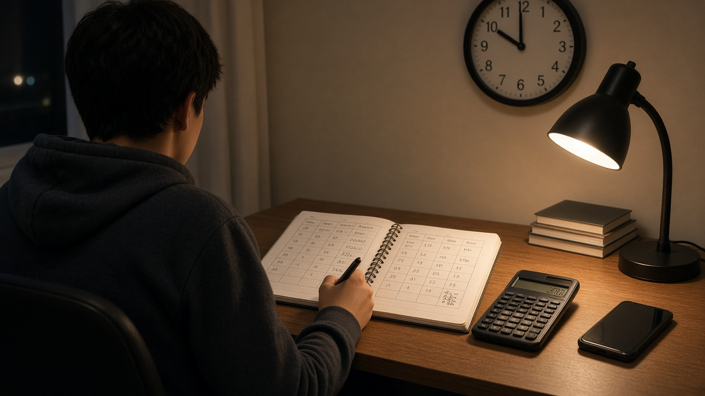

수능 끝나고 알바 시작하는 청소년, 근로계약서 서면 교부와 하루 7시간 밤 10시 제한 최저임금 10,320원 정리
수능이 끝나면 용돈도 벌고 사회 경험도 해 보고 싶어서 아르바이트부터 알아보는 친구들이 많죠.
2027학년도 수능은 11월 19일 목요일이라 며칠 남지 않았고, 그다음 주부터 면접을 보러 다니는 경우도 흔해요.
그런데 만 18세 미만이면 어른과 다르게 적용되는 규칙이 꽤 많아서, 첫 출근 전에 몇 가지만 알아 두면 훨씬 안전해요.
계약서는 어떻게 쓰는지, 몇 시간까지 일할 수 있는지, 시급은 얼마인지, 문제가 생기면 어디에 전화하는지 차례로 정리해 볼게요.
계약서는 서면으로 받아야 하고 부모님 서류도 필요해요
사장님이 말로만 시급과 근무시간을 정하고 시작하는 곳이 있는데, 18세 미만과는 그렇게 하면 안 돼요.
근로기준법은 18세 미만과 계약을 맺을 때 근로조건을 서면으로 적어서 교부하도록 정하고 있고, 전자문서도 서면으로 인정돼요.
이 의무를 지키지 않은 사업주는 500만원 이하의 벌금에 처해질 수 있어요.
계약서에는 임금, 소정근로시간, 휴일, 연차 유급휴가, 일하는 장소와 맡을 업무가 들어가야 해요.
사업장에서는 나이를 확인할 수 있는 가족관계증명서와 친권자 또는 후견인의 동의서를 갖춰 두어야 해요. 이걸 갖추지 않고 고용하면 사업주에게 500만원 이하의 과태료가 부과돼요.
여기서 헷갈리기 쉬운 점이 있어요. 부모님이 동의서를 써 주는 것과 계약을 대신 맺어 주는 것은 달라요. 친권자나 후견인은 미성년자의 근로계약을 대리할 수 없고, 계약은 본인이 직접 맺어야 해요.
고용노동부에 연소근로자 표준근로계약서와 친권자 동의서 표준 양식이 올라와 있으니, 계약서를 받지 못했다면 그 양식을 보여 드려도 좋아요.
계약서에 일을 그만두면 위약금을 물겠다거나 손해배상액을 미리 정해 두는 문구가 있어도 효력이 없고, 그런 계약을 맺는 것 자체가 금지되어 있어요. 위반하면 사업주는 500만원 이하의 벌금을 받아요.
하루 7시간 주 35시간, 밤 10시 이후와 휴일 근무는 원칙적으로 안 돼요
15세 이상 18세 미만은 하루 7시간, 일주일 35시간을 넘겨 일할 수 없어요.
본인과 사장님이 합의하면 하루 1시간, 일주일 5시간까지는 연장할 수 있어요. 그러니 합의했더라도 하루 8시간, 일주일 40시간이 상한이에요.
오후 10시부터 다음 날 오전 6시까지, 그리고 휴일에는 18세 미만을 일하게 할 수 없는 것이 원칙이에요.
예외는 청소년 본인이 동의하고, 사업주가 관할 지방고용노동관서의 인가를 받은 경우뿐이에요. 인가 없이 사장님이 편하게 말로 부탁하는 정도로는 해당하지 않아요.
이 근로시간 제한과 야간, 휴일 근로 제한을 어기면 사업주는 2년 이하의 징역 또는 2천만원 이하의 벌금에 처해질 수 있어요.
편의점이나 카페에서 마감 시간이 밤 10시를 넘는지 면접 때 미리 물어보는 것이 좋아요.
시급은 청소년도 똑같이 10,320원이고 주 15시간부터 주휴수당이 붙어요
2026년 적용 최저임금은 시간급 10,320원이고, 업종 구분 없이 모든 사업장에 똑같이 적용돼요. 나이가 어리다고 더 낮게 줄 수 있는 규정은 없어요.
사업주가 최저임금보다 적게 주면 3년 이하의 징역 또는 2천만원 이하의 벌금에 처해질 수 있어요.
내년 금액도 이미 정해졌어요. 고용노동부가 8월 5일 고시한 2027년 적용 최저임금은 시간급 10,700원으로, 올해보다 380원 오른 금액이고 2027년 1월 1일부터 적용돼요.
그래서 올해 안에 시작한 알바라도 해가 바뀌면 시급이 새 금액에 맞게 올라갔는지 한 번 살펴봐야 해요.
일주일에 정해진 근무일을 모두 채우고, 4주 평균으로 일주일 소정근로시간이 15시간 이상이면 유급휴일인 주휴가 생겨서 주휴수당을 받을 수 있어요.
상시 근로자가 5명 이상인 사업장이라면 연장과 야간 근로에는 통상임금의 50퍼센트 이상이 더해져요.
첫 월급을 받으면 근무한 시간에 시급을 곱한 금액과 급여명세서가 맞는지 꼭 비교해 보세요.

2026년에는 2008년 이후 태어난 친구들이 청소년이에요
청소년보호법의 청소년은 만 나이가 아니라 태어난 연도를 기준으로 해요. 19세가 되는 해의 1월 1일이 지나면 빠지는 방식이라, 2026년에는 2008년 이후에 태어난 사람이 해당돼요.
다만 근로기준법에서 시간 제한을 받는 연소자는 만 18세 미만이라서, 법마다 기준이 달라요. 올해 수능을 보는 친구라면 생일에 따라 근로기준법상 18세 미만일 수도, 이미 지났을 수도 있어요.
청소년은 출입도 고용도 막혀 있는 곳과, 출입은 되지만 고용만 막힌 곳이 있어요.
유흥주점, 단란주점, 노래연습장, 무도장, 사행행위 영업, 전화방, 홀덤펍 같은 곳은 출입과 고용이 모두 금지돼요.
숙박업, 비디오대여업, 만화대여업, 주로 술을 파는 일반음식점 등은 청소년 고용이 금지되는 곳이에요.
일반음식점이라도 주류 판매가 주목적이 아니고 전월 매출 중 술 비중이 25퍼센트를 넘지 않으면 고용할 수 있는 길이 열려 있어요.
허가를 받았는지가 아니라 실제로 어떤 영업을 하는지가 기준이니, 간판만 보지 말고 무엇을 파는 곳인지 확인해 주세요.
월급이 밀리거나 이상할 때는 이 번호로 전화하세요
임금을 받지 못했다면 지방고용노동관서나 근로감독관에게 신고할 수 있고, 19세 미만의 미성년자도 부모님 동의 없이 직접 임금을 청구할 수 있어요.
고용노동부 상담은 대표전화 1350으로 하면 되고, 청소년과 청년을 위한 청소년청년근로권익센터는 1644-3119예요. 마음이 힘들거나 막막할 때는 청소년상담 1388도 있어요.
체불된 임금은 대한법률구조공단에서 무료로 소송을 도와주는 제도도 있어요.
계약서 사진, 출퇴근 기록, 급여 입금 내역은 지워지기 전에 따로 저장해 두면 나중에 큰 도움이 돼요.
시작하기 전에 계약서, 동의서, 근무시간, 시급 이 네 가지만 확인해도 대부분의 문제는 미리 막을 수 있어요.
참고 자료 법제처 찾기쉬운 생활법령 근로청소년 2026년 10월 15일 기준, 대한민국 정책브리핑 수능 끝 알바 시작 전 알아두세요, 고용노동부 2026년 적용과 2027년 적용 최저임금 고시 보도자료, 한국교육과정평가원 2027학년도 수능 시행세부계획 공고 www.easylaw.go.kr
태그 청소년알바 수능끝알바 근로계약서 연소근로자 친권자동의서 최저임금 주휴수당 야간근로 청소년고용금지업소 임금체불